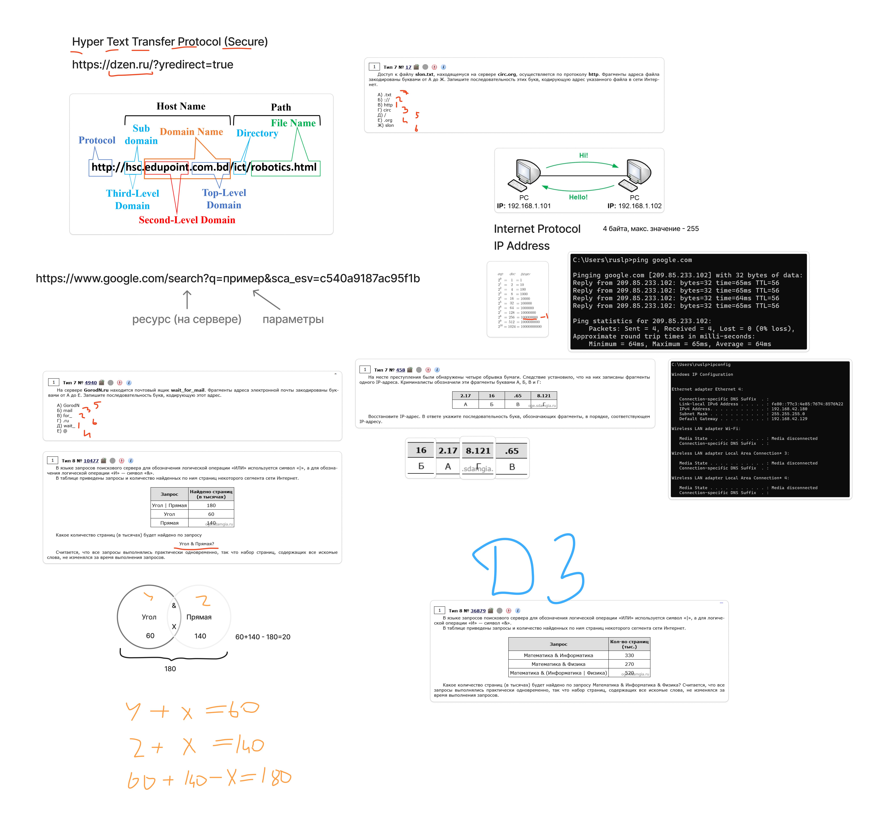

Структура URL:
http:// или https://).hsc.edupoint.com.bd)./ict/robotics.html)..bd, .org, .ru).edupoint).hsc).Протоколы интернет:
Параметры в URL:
?q=пример).IP-адреса:
192.168.1.101.Сетевые команды:
ping используется для проверки доступности сервера.ipconfig для просмотра сетевых настроек (IPv4, маска подсети, шлюз).Бинарный код и десятичные числа:
Логические операции в поиске:
& (И) и | (ИЛИ) для комбинирования запросов.Угол & Прямая).Решение задач с логикой:
